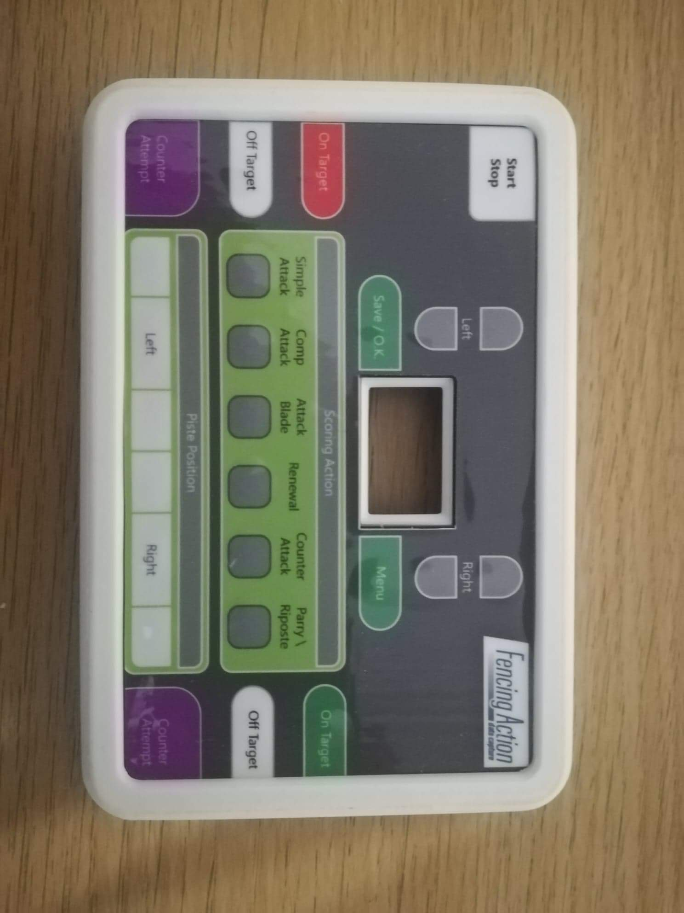

Fencing Action
A system to log fencing actions performed during a bout. There are 6 aspects to the project.
- The design of the datalogger
- The pcb design based on an ESP32
- Coding the Microcontroller in C++
- A server application to handle wireless IO and interface with the SQL Database
- A WPF client application to display current stats and produce reports and statistics